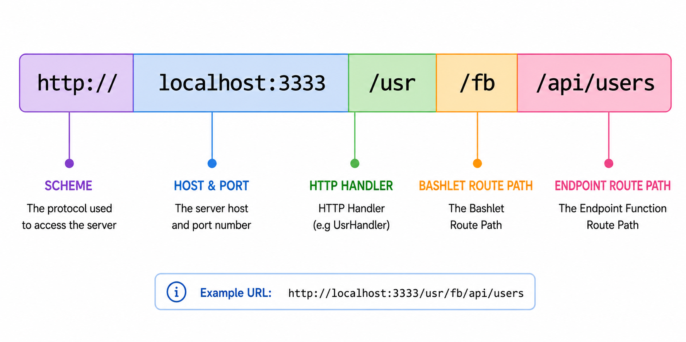

Setup Dynamic Web Hosting on Mocktail Server
Dynamic web hosting is a feature of the Mocktail Server that allows you to host dynamic web applications on the Mocktail Server. This is achieved via the use of Bashlets, which are server-side scripts that handle client web requests and generates dynamic responses. The Mocktail Server provides a Bashlet Container implementation (BashletEngine) which executes Bashlet endpoint functions and return the output as the response to the client's request.
Introduction to Bashlets
Overview
Bashlets are specialized, server-side, bash scripts that handle inbound client web requests and generate dynamic responses. The Mocktail Server provides a Bashlet Container implementation (BashletEngine) which intercepts inbound requests received from clients,routes them to appropriate handler functions inside a Bashlet and finally returns any user-defined response to the client. Support for common HTTP protocol methods such as GET, POST, PUT, DELETE, HEAD, OPTIONS is provided as standard. Bashlets provide a solid foundation for the construction of server-side web applications using nothing more than the Bash scripting language you're already familiar with; all the heavy-lifting related to the acceptance, parsing and routing of inbound client requests, the generation & dispatching standards compliant HTTP responses, and management of the server-side application context, is handled by the Mocktail Server and the BashletEngine. This allows you to focus on the business logic of your web application without having to worry about low-level HTTP protocol details and the underlying client-server communication/message exchange process. Bashlets are also a great way to get a dynamic web application up and running quickly, without having to install and configure a full-fledged web server stack and language platform like Java,NodeJS,Go or similar; all thats required is bash which is installed as standard on most Linux distributions and MacOS.The anatomy of an end-to-end Bashlet request
The following diagram illustrates a simplified view of the end-to-end flow of a client request to a Bashlet endpoint including the intermediary components that facilitate the generation and dispatch of standards-compliant HTTP responses to the client.
The process, as depicted in the diagram, may be breifly summarised as follows:
- A client sends a HTTP request to the Mocktail Server.
- All inbound HTTP requests, received to the Mocktail Server are delegated to the Root Handler; this is a special, internal handler that generally does not service client requests directly, it's principal purpose is to parse the raw incoming request data of the wire into an equivalent high-level, request object representation and then to route the request to downstream handlers in the Mocktail Server stack.
- The Root Handler delegates the request to the Usr Handler. By default, all user-defined Bashlets will be associated with the Usr Handler via the depicted usr-handler-routes.json file; this is the simplest way to get started using bashlets. See the next section on Configuring Bashlets for an in-depth guide on how to define a Bashlet route type in the Usr Handler's json-based, routing file. Details on how to define custom handlers if absolutely necessary, are also provided, however this is a more complex procedure.
- Next, where Usr Handler detects that the request is associated with a Bashlet route, it immeidately suspends processing of the request and hands it off to the BashletEngine.
- The BashletEngine then uses the available routing information (Provided by the handler that invoked it) to look up the target Bashlet and initialise it by calling its init() function.
- Next The BashletEngine further parses the request and routes it to the appropriate endpoint function within the now intialised Bashlet, at this point control in passed to the Bashlet.
- The Bashlet endpoint function processes the request, generates a response, and returns it to the BashletEngine.
- Finally the BashletEngine formats the response according to HTTP standards and sends it back to the client
Writing Your First Bashlet
Overview
The process of creating a new Bashlet can be broadly divided into two simple steps; in this section shall cover the following:- Creating the Bashlet script file and implementing the required endpoint functions
- Configuring the Mocktail Server to recognise the new Bashlet and route requests to it
- Testing the new Bashlet by sending a request to it and verifying the response
1. Creating the Bashlet script file
Firstly from the root directory of the Mocktail Server, navigate to the following path:res / bashlets / usr. This is the location where all, user-defined, Bashlet script files should be stored. Create a new file called my-first-bashlet.shh and open it in your favourite text editor. The contents of the file should look as follows:
#!/bin/bash
#--------------------------------------------------------------------------------------------------
# name: my-first-bashlet.shh
# description: A simple Bashlet that handles GET requests to the path /api/users and
# returns a string "success" response to the client.
#--------------------------------------------------------------------------------------------------
# Firstly import/source the BashletContext, this is the **only** mandatory import. It provides
# functions to support parsing of the incoming request object, construction/augmentation of
# the response object as well as various other utility functions that simplify
# the process of writing Bashlets
source "$SCRIPT_DIR/res/bashlets/internal/BashletContext"
# An example Bashlet endpoint function,note the mandatory use of the @route annotation
# below, to specify the HTTP Method and Path for the endpoint.
# @route method=get path=/api/users
getUsers(){
# The Bashlet request/response objects are automatically injected into
# every endpoint function (by the BashletEngine) as argument 1 and 2 respectively.
request="$1"
response="$2"
# TODO: this is where the business logic of the endpoint function would be implemented, for example
# retrieving data from a database, performing calculations, etc.
# A textual/html or JSON value can be set as the response body.
# Here we simply set the response body to the string "success" using the
# SetBashletResponseBody" helper function provided by the BashletContext.
# The function takes the response object and the body content as arguments and a
# call to it will ultimately, result in the BashletEngine returning this response to the client.
SetBashletResponseBody "$response" "success"
}
See the Bashlet Examples section for more complex examples of Bashlet endpoint functions that parse the request object to obtain URL query and/or path variables, set and read HTTP headers and cookies as well as return JSON responses. Even this is relatively straightforward as the BashletContext provides a rich set of functions to support these and other common tasks that are required when writing Bashlets.
2. Creating the Bashlet script route configuration
As depicted in the system architecture diagram in the intro section, a heirarchial set of HTTP handlers serves as the backbone of the Mocktail Server. The Usr Handler is the default handler that is responsible for routing requests to user-defined Bashlets (and other user generated content/resources). The Usr Handler uses a JSON-based configuration file to define the Bashlet routes that it will service. This file is located at:res / handlers / usr / usr-handler-routes.json. Open this file in your favourite text editor and you will see the following contents:
{
"Name": "Mocktail User Handler Routes",
"Description": "Defines the routing configuration for the Mocktail user handler.",
"Version": "1.0",
"Routes": [
{
"Title": "Example (User Profile) Bashlet Controller Route",
"Path": "/example",
"Type": "bashlet",
"BashletPath": "/res/bashlets/usr/ExampleBashlet",
"Description": "An example (profiles) bashlet that serves to demonstrate core bashlet functionality."
},
{
"Title": "General System UI Resources For use by the Example Route. This allows requests forwarded to the system handler's UIs to be served with the required static resources.",
"Path": "/example/api/profiles/assets/*",
"Type": "static",
"FilePath": "/res/handlers/sys/.files/ui/assets",
"Description": "The wildcard path for serving assets such as CSS, JS, images etc for the system handler's UIs. This route will attempt to match any request starting with /assets/ and serve the corresponding static file from the .files/ui directory. This allows for easy referencing of static resources in the HTML files served by the system handler, ensuring that the necessary assets are available for the UI to function properly.Note: Where a wildcard Path is used (i.e /assets/*) the FilePath MUST refer to the base internal directory that the files should be served from such that [BASE_DIR]/[Relative_Request_Path_Reveived_To_Handler] resolves to the file on disk, failure to set this path correctly will result in 404 Not Found errors being returned to the client."
}
]
}
{
"Title": "My First Bashlet Route",
"Path": "/fb",
"Type": "bashlet",
"BashletPath": "/res/bashlets/usr/my-first-bashlet.shh",
"Description": "A simple Bashlet that handles GET requests to a SINGLE endpoint path: /api/users and returns a string 'success' response to the client."
}
- The Path property defines the base path for the Bashlet, all requests to this path will be routed to the Bashlet. In this example, the Bashlet will be accessible at the path /fb on the Mocktail Server, where the full path may looks as follows: [host]:[port]/usr/fb. The /usr component of the path relates to the Usr Handler which requests to all user-defined Bashlets must be routed through.
- The BashletPath property defines the absolute path to the Bashlet script file on disk (i.e the my-first-bashlet.shh file that we created). This is the file that will be executed by the BashletEngine when a request is routed to this Bashlet.
3. Testing My First Bashlet
To test the new Bashlet, simply start (or restart, if already running) the Mocktail Server and send a GET request to the following path using your favourite HTTP client (e.g Postman, curl, browser, etc):
You should receive a response with the body content set to the string "success" as defined in the Bashlet endpoint function. If you receive a 404 Not Found error, please ensure that the Bashlet route has been correctly defined in the usr-handler-routes.json file and that the Mocktail Server has been restarted after making changes to this file.Thats it!! You've written and deployed your first Bashlet to Mocktail Server, congratulations! in the next section we'll take a look at real world examples of Bashlet endpoint functions and how to use the BashletContext to parse request data, persist contextual data across requests, and to generate dynamic JSON responses.
Bashlets: A Closer Look
Overview
In this section we will build upon the simple Bashlet that we created in the previous section and introduce some additional functionality. The goal is to demonstrate how to use the various functions exposed by the BashletContext to easily write real-world Bashlet applications that can parse/process request data, persist contextual data across requests, and generate dynamic JSON responses. The following details will be covered in this section:- The Bashlet Request & Response Objects
- Parsing URL query and path variables
- Parsing and Setting the Request Body
- Setting and reading HTTP headers and cookies
- Forwarding and redirecting requests
1. The Bashlet Request & Response Objects
Much of the work you'll undertake in a Bashlet will require the direct use of the Basdhlet Request and Response objects, thus it may be useful to breifly review their respective structure and usage before progressing any further. The Bashlet Request and Response objects are high-level JSON-based objects that are automatically injected into every Bashlet endpoint function by the Bashlet Container (BashletEngine) when the endpoint function is invoked. The Request object contains all the information about the inbound client request, including the HTTP method, path, headers, query parameters, and body content. The Response object is used to construct the response that will be sent back to the client, including setting the status code, headers, and body content.2. Parsing URL query and path variables
The HTTP specification allows for the inclusion of paramters in a request URL, either as query parameters (appended to the URL after a '?' character) or as path variables (embedded within the URL path). The BashletContext provides functions to easily extract these parameters from the Request object. The following code examples will demonstrate how to parse query parameters and path variables in a Bashlet endpoint function, open the my-first-bashlet.shh file and add the following endpoint functions:
# example create user endpoint function that demonstrates how to parse query string parameters from an inbound request and also how to return
# an error response to the client if a required parameter is missing. Also note the use of the @route annotation to specify the POST HTTP method and
# a path for this endpoint.
# @route method=post path=/api/users
createUser(){
request="$1"
response="$2"
Log "DEBUG" "my-first-bashlet: inside createUser..."
# preamble: Assuming the request URL to the this endpoint looks as follows: /api/users?id=123
# The query string parameter "id" is embedded in the URL after the '?' character. Thus we:
# 1) attempt to parse the "id" query string parameter from the request object, if it is not present we will return a 400 Bad Request error response to the client.
id="$(ParseBashletRequestQueryStringParam "$request" "id")"
# 2) if the id parameter is not present we directly return an error response.
if [[ -z $id ]]; then
Log "ERROR" "my-first-bashlet: missing required query string parameter 'id', returning 400 Bad Request error response to client..."
local err_status_code=400
local err_content="Bad Request - Missing required query string parameter 'id'"
SendBashletErrorResponse "$err_status_code" "$err_content" "$request"
else
Log "DEBUG" "my-first-bashlet: received id query string parameter: $id, proceeding to create user..."
# TODO: here is where you would parse the rest of the data from the POST request body
# and undertake the necessary business logic to create a new user in your application,
# for example inserting a new record into a database, etc.
#finally, for the purposes of this example, we will simply return a 200 OK response to the client with a success message
local success_content="User created successfully with id: $id"
SetBashletResponseBody "$response" "$success_content"
fi
}
- Most critically, the ParseBashletRequestQueryStringParam function (provided by the BashletContext) is used to extract the value of a specific query string parameter from the Request object. It takes the Request object and the name of the parameter as arguments and returns the value of the parameter if it exists, or an empty string if it does not. Where multiple URL parameters have been specified e.g api/users?id=123&name=John, then multiple calls to the ParseBashletRequestQueryStringParam function can be made to parse each parameter.
- If the required query string parameter is missing, we use the SendBashletErrorResponse function to return a 400 Bad Request error response to the client, along with an appropriate error message.
- If the required query string parameter is present, we proceed with the business logic of the endpoint function and return a success response to the client.
- Finally you may have noticed log lines at various points in the code to help with debugging and monitoring. Log is a built-in function that may be used from anywhere in a Bashlet to produce structured log messages at different levels of granularity (i.e. TRACE,DEBUG, INFO, WARN, ERROR). The function takes the log level and the message as arguments.
Next we'll take a look at how to parse path variables from the request URL. Path variables are typically used to identify specific resources in a RESTful API, and they are embedded directly in the URL path. For example, a request to /api/users/123 would indicate that we want to access the user with ID 123. In this next example, we'll demonstrate how to parse a path variable from the request URL in a Bashlet endpoint function, which is just as simple as parsing a query string parameter as the BashletContext provides a function to assist us in this regard. Add the following endpoint function definition to your my-first-bashlet.shh file:
# example update user address endpoint function that demonstrates how to parse path variables from an inbound request and also how to return
# an error response to the client if a required path variable is missing. Also note the use of the @route annotation to specify the
# PUT HTTP method and a path for this endpoint. Also note how the path variable is specified in the @route annotation using curly braces, e.g {UserId}.
# this is the variable that we will parse from the request URL using the ParseBashletRequestPathParam function provided by the BashletContext.
# @route method=put path=/api/users/{UserId}/addresses
updateUserAddress(){
request="$1"
response="$2"
Log "DEBUG" "my-first-bashlet: Inside updateUserAddress function..."
# parse the user id from the request path.
userId=$(ParseBashletRequestPathParam "$request" "UserId")
# if the user id is empty, return a 400 error to the client.
if [ -z "$userId" ]; then
local err_content="Bad Request - Missing required path parameter: UserId"
SendBashletErrorResponse "400" "$err_content" "$request"
return 1
fi
# TODO: here is where you would parse the rest of the data from the PUT request body and undertake
# the necessary business logic to update the user's address in your application, for example
# updating a record in a database, etc.
# finally send success response to client, for the purposes of this example we will simply return a
# 200 OK response to the client with a success message
local success_content="User address updated successfully for user id: $userId"
SetBashletResponseBody "$response" "$success_content"
}
- The @route annotation is used to define the method and path for the endpoint as usual, however if you examine the path value, you will note that it also includes a path variable, defined in curly braces: {userId} in this case. Any number of path variables can be defined in the same way.
- The ParseBashletRequestPathParam function (provided by the BashletContext) is used to extract the value of a specific path variable from the Request object. It takes the Request object and the name of the path variable as arguments (as defined in the @route annotation) and returns the value of the variable if it exists.
3. Parsing and Setting the Request Body
This section will cover how to parse the request body in a Bashlet and set the response body. Up until now we've only dealt with setting string based response bodies, this section will also demonstrate how to construct and return a JSON response body to the client. The BashletContext provides functions to easily parse the request body and set the response body. Please add the following endpoint function definition to your my-first-bashlet.shh file:
# an alternative create user endpoint function that demonstrates how to parse the JSON request body
# in a POST request and return a JSON response to the client.
# @route method=post path=/api/users2
createUser2(){
request="$1"
response="$2"
Log "DEBUG" "my-first-bashlet: inside createUser2..."
# preamble: Assuming the request looks as follows: POST /api/users2 with a JSON body: {"id":123,"name":"John Doe"}
# Then we:
# 1) parse the JSON request body using the ParseBashletRequestBody function provided by the BashletContext, this function
# takes the Request object as an argument and returns the parsed JSON body as a string.
json_body=$(ParseBashletRequestBody "$request")
# 2)TODO: here is where you would execute some business logic with the parsed JSON data, for example inserting a new record into a database, etc.
# the request_body can be used as-is OR individual values in the JSON body can be extracted using the ParseJSONString or ParseJSONField
# functions provided by the BashletContext for example:
userId=$(ParseJSONField "$json_body" "id")
userName=$(ParseJSONString "$json_body" "name")
userSysId=1234
# 3) create a JSON response to the client.. here we set JSON String and Number values Boolean values may also be set using the SetJSONBoolean function provided by the BashletContext.
# The SetJSONString, SetJSONNumber and SetJSONBoolean functions take the JSON string, the field name and the value to be set as arguments and return the updated JSON string.
# SetJSONField function can also be used to set a field in the JSON string to a value of any type, including nested objects and arrays.
local createUserResponse="{}" # start with an empty JSON object to hold the response data
createUserResponse="$(SetJSONString "$createUserResponse" '.id' "$userId")" # set the id field in the JSON response to the value of the userId variable parsed from the request
createUserResponse="$(SetJSONString "$createUserResponse" '.name' "$userName")" # set the name field in the JSON response to the value of the userName variable parsed from the request
createUserResponse="$(SetJSONNumber "$createUserResponse" '.sysId' "$userSysId")" # set the sysId field in the JSON response to the value of the userSysId variable, which is a number
# this will produce a JSON response that looks as follows: {"id":123,"name":"John Doe","sysId":1234}
# 4) set the response body to the constructed JSON.
SetBashletResponseBody "$response" "$createUserResponse"
}
- The ParseBashletRequestBody function (provided by the BashletContext) is used to extract the entire request body from the Request object. It takes the Request object as an argument and returns the request body as a JSON string.
- The BashletContext also provides functions to easily construct JSON responses, such as SetJSONString, SetJSONNumber, and SetJSONBoolean. These functions take a JSON string, a field name, and a value as arguments and return an updated JSON string with the specified field set to the given value.
- The SetBashletResponseBody function (also provided by the BashletContext) is used to set the response body in the Response object. It takes the Response object and the response body content as arguments and sets the response body accordingly.
4. Setting and reading HTTP headers and cookies
In this section we'll explore how to set and read HTTP headers and cookies in a Bashlet endpoint function. The BashletContext provides functions to easily set and read HTTP headers and cookies in the Request and Response objects. Please add the following endpoint function definition to your my-first-bashlet.shh file:
# example update user address endpoint function that demonstrates how to set and read HTTP headers and cookies in a Bashlet endpoint function.
# @route method=put path=/api/users/{UserId}/settings
updateUserSettings(){
request="$1"
response="$2"
Log "DEBUG" "my-first-bashlet: Inside updateUserSettings function..."
# parse the user id from the request path.
userId=$(ParseBashletRequestPathParam "$request" "UserId")
# if the user id is empty, return a 400 error to the client.
if [ -z "$userId" ]; then
local err_content="Bad Request - Missing required path parameter: UserId"
SendBashletErrorResponse "400" "$err_content" "$request"
return 1
fi
# FIRST LETS DEAL WITH THE PROCESS OF READING HTTP HEADERS FROM THE REQUEST OBJECT AND SETTING HTTP HEADERS IN THE RESPONSE OBJECT.
# The BashletContext provides functions to easily read and set HTTP headers in the Request and Response objects.
# 1) parse the standard "User-Agent" header from the request by using the ParseBashletRequestHeader function provided by the BashletContext.
# This function takes the Request object and the header name as arguments and returns the value of the header if it exists,
# or an empty string if it does not.
# if it is not present we will return a 400 Bad Request error response to the client.
# Note: You can also alternatively use the ParseBashletRequestHeaders function to parse all headers from the request.
#
userAgent="$(ParseBashletRequestHeader "$request" "User-Agent")"
if [[ -z $userAgent ]]; then
Log "ERROR" "my-first-bashlet: missing required User-Agent header, returning 400 Bad Request error response to client..."
local err_status_code=400
local err_content="Bad Request - Missing required User-Agent header"
SendBashletErrorResponse "$err_status_code" "$err_content" "$request"
return 1
fi
# 2) Next we can set an HTTP header in the response, by using the SetBashletResponseHeadera function provided by the BashletContext.
# This function takes the Response object, the header name and the header value as arguments and sets the header in the response.
SetBashletResponseHeader "$response" "X-User-ID" "$userId"
# NEXT LETS DEAL WITH THE PROCESS OF READING COOKIES FROM THE REQUEST OBJECT AND SETTING COOKIES IN THE RESPONSE OBJECT. COOKIES
# ARE REALLY JUST ANOTHER TYPE OF HTTP HEADER, THUS THE PROCESS IS SIMILAR TO THAT OF READING AND SETTING HTTP HEADERS.
# The BashletContext provides functions to easily read and set cookies in the Request and Response objects.
# 3) parse the "session_id" cookie from the request by using the ParseBashletRequestCookieParam function provided by the BashletContext.
# This function takes the Request object and the cookie name as arguments and returns the value of the cookie if it exists,
# or an empty string if it does not. If the cookie is not present, we will return a 400 Bad Request error response to the client.
# Note: You can also alternatively use the ParseBashletRequestCookies function to parse all cookies from the request.
session_id=$(ParseBashletRequestCookieParam "$request" "session_id")
if [[ -z $session_id ]]; then
Log "ERROR" "my-first-bashlet: missing required session_id cookie, returning 400 Bad Request error response to client..."
local err_status_code=400
local err_content="Bad Request - Missing required session_id cookie"
SendBashletErrorResponse "$err_status_code" "$err_content" "$request"
return 1
fi
# 4) Next we can set a cookie in the response, by using the SetCookieInBashletResponse function provided by the BashletContext.
# This function takes the Response object, the cookie name, the cookie value and an optional cookie attributes string as arguments
# and sets the cookie in the response. The cookie attributes string can be used
# to set additional attributes for the cookie, such as the domain, path, secure, etc.
# Here we just set a simple cookie with the name "user_id" and the value of the userId variable, along with some common attributes
# for security and privacy.
SetCookieInBashletResponse "$response" "user_id" "$userId" "Path=/; HttpOnly; Secure; SameSite=Strict"
# TODO: here is where you would parse the rest of the data from the PUT request body and undertake
# the necessary business logic to update the user's settingd in your application, for example
# updating a record in a database, etc.
# finally send success response to client, for the purposes of this example we will simply return a
# 200 OK response to the client with a success message
local success_content="User address updated successfully for user id: $userId"
SetBashletResponseBody "$response" "$success_content"
}
- The ParseBashletRequestHeader function (provided by the BashletContext) is used to extract the value of a specific HTTP header from the Request object. It takes the Request object and the name of the header as arguments and returns the value of the header if it exists, or an empty string if it does not.
- The SetBashletResponseHeader function (also provided by the BashletContext) is used to set the value of a specific HTTP header in the Response object. It takes the Response object, the name of the header, and the value of the header as arguments and sets the header in the response.
- The ParseBashletRequestCookieParam function (provided by the BashletContext) is used to extract the value of a specific cookie from the Request object. It takes the Request object and the name of the cookie as arguments and returns the value of the cookie if it exists, or an empty string if it does not.
- The SetCookieInBashletResponse function (also provided by the BashletContext) is used to set the value of a specific cookie in the Response object. It takes the Response object, the name of the cookie, the value of the cookie, and an optional cookie attributes string as arguments and sets the cookie in the response.
5. Forwarding and redirecting requests
In this section we'll explore how to forward and redirect requests in a Bashlet endpoint function. Whilst they are similar in concept, they have different use cases and implementation details. When a request is forwarded to another resource, this all happens server-side; the original request is forwarded to the new resource. Conversely, when a request is redirected, the server sends a response to the client indicating that the requested resource has moved to a new location and the client is expected to make a new request to the new location. The BashletContext provides functions to easily forward and redirect requests to both static and dynamic resources. First we'll take a look at how to forward a request.Please add the following endpoint function definitions to your my-first-bashlet.shh file:
# Navigates to a fictious admin dashboard, this endpoint function demonstrates how to forward
# a request to a STATIC resource (in this case a static HTML file) using the ForwardBashletRequest
# function provided by the BashletContext. The ForwardBashletRequest function takes the path to the resource
# to forward the request to as an argument and forwards the request to that resource. Note, the ORIGINAL request
# is forwarded to the new resource, and the response from the new resource is returned to the client.
# Note: The specified paths should be relative to the Mocktail Server's root directory, and the resource must exist on disk,
# otherwise a 404 Not Found error will be returned to the client.
# @route method=get path=/dashboard
viewAdminDashboard(){
request="$1"
response="$2"
Log "DEBUG" "my-first-bashlet: inside viewAdminDashboard, forwarding to dashboard..."
# simply issue a call to the ForwardBashletRequest function to forward the request to the
# specified resource, in this case a STATIC HTML file. You may also use this function to
# forward requests to DYNAMIC resources, such as other Bashlets or endpoint functions within
# the SAME Bashlet.
ForwardBashletRequest "/usr/ui/my-fictitious-dashboard.html"
}
# Navigates to a fictious admin dashboard, this endpoint function demonstrates how to redirect
# a request to a STATIC resource (in this case a static HTML file) using the DispatchBashletRedirectResponse function provided by the BashletContext.
# The DispatchBashletRedirectResponse function takes the path to the resource as an argument and redirects the request to that resource.
# Note: The specified paths should be relative to the Mocktail Server's root directory, and the resource must exist on disk,
# otherwise a 404 Not Found error will be returned to the client.
# @route method=get path=/redirect-dashboard
redirectToAdminDashboard(){
request="$1"
response="$2"
Log "DEBUG" "my-first-bashlet: inside redirectToAdminDashboard, redirecting to admin dashboard..."
# simply issue a call to the DispatchBashletRedirectResponse function to redirect the request to the
# specified resource, in this case a STATIC HTML file.
DispatchBashletRedirectResponse "/usr/ui/my-fictitious-dashboard.html"
}
- The ForwardBashletRequest function (provided by the BashletContext) is used to forward a request to another resource. It takes the path to the resource as an argument and forwards the request to that resource. The original request is forwarded to the new resource, and the response from the new resource is returned to the client.
- The DispatchBashletRedirectResponse function (also provided by the BashletContext) is used to redirect a request to another resource. It takes the path to the resource as an argument and redirects the request to that resource. The server sends a response to the client indicating that the requested resource has moved to a new location, and the client is expected to make a new request to the new location.
The Bashlet Context